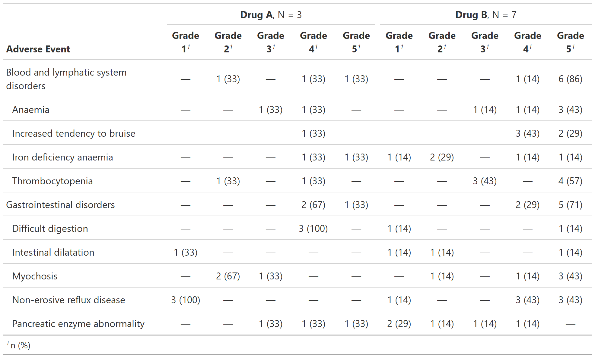

The function tabulates adverse events. One AE per ID will be counted in the
resulting table. If a by= variable is passed and a
patient experienced more than one of the same AE, the AE associated with the
highest by= level will be included. For example, if a patient has two of
the same AE and by = grade, the AE with the highest grade will be
included.
Similarly, if tabulations within system organ class are requested, the
AE within SOC associated with the highest grade will be tabulated.
tbl_ae(
data,
id,
ae,
soc = NULL,
by = NULL,
strata = NULL,
id_df = NULL,
statistic = "{n} ({p})",
by_values = NULL,
digits = NULL,
sort = NULL,
zero_symbol = "—",
missing_location = c("first", "last", "hide")
)Arguments
- data
Data frame
- id
Variable name of the patient ID
- ae
Variable name of the adverse event column
- soc
Variable name of the system organ class column
- by
Variable to split results by, e.g. report AEs by grade
- strata
Variable to stratify results by, e.g. report AEs summaries by treatment group
- id_df
Optional data frame of complete id values and strata to achieve correct base n for the situation in which not all subjects experience adverse events
- statistic
String indicating the statistics that will be reported. The default is
"{n} ({p})"- by_values
Optional vector of complete by values, listed in desired order, to achieve correct table structure for the situation in which an adverse event of a certain grade is not observed for a given soc
- digits
Specifies the number of decimal places to round the summary statistics. By default integers are shown to zero decimal places, and percentages are formatted with
style_percent(). If you would like to modify either of these, pass a vector of integers indicating the number of decimal places to round the statistics. For example, if the statistic being calculated is"{n} ({p}%)"and you want the percent rounded to 2 decimal places usedigits = c(0, 2). User may also pass a styling function:digits = style_sigfig- sort
Controls order of AEs and SOCs in output table. The default is
NULL, where AEs and SOCs are sorted alphanumerically (and factors sorted according to their factor level). Usesort = "ae"to sort AEs in decreasing frequency order,sort = "soc"to sort SOCs in decreasing order, andsort = c("ae", "soc")to sort both. AEs are sorted within SOC.- zero_symbol
String used to represent cells with zero counts. Default is the em-dash (
"\U2014"). Usingzero_symbol = NULLwill print the zero count statistics, e.g."0 (0)"- missing_location
location where the column summarizing values with missing levels
by=will be located in the final table. Must be one ofc("first", "last", "hide). Default is"first"
Example Output
Example 1

Example 2

Examples
# \donttest{
# Example 1 -----------------------------------------------------------------
tbl_ae_ex1 <-
df_adverse_events %>%
tbl_ae(
id = patient_id,
ae = adverse_event,
soc = system_organ_class,
by = grade,
strata = trt
) %>%
modify_header(all_ae_cols() ~ "**Grade {by}**")
# Example 2 -----------------------------------------------------------------
tbl_ae_ex2 <-
df_adverse_events %>%
tbl_ae(
id = patient_id,
ae = adverse_event,
by = grade
) %>%
modify_header(all_ae_cols() ~ "**Grade {by}**")
# }